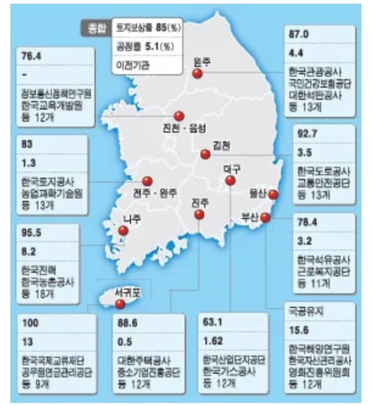

몇몇 주 거점에 몰빵해서 발전시켜도 제대로 발전 못시킬 상황에서
전국 균형 발전하겠다고 공기업, 지식산업센터, 혁신도시 다 흩뿌림
흩뿌린것도 각 지역 광역시로 흩뿌린게 아니라
또 거기서 균형발전하겠다고 광역시 말고 그 근처에 지음
가령 나주 혁신도시 같은경우 광주에 안짓고 광주에서 차로 25km 떨어진 나주에 지음
광주에서 차로 편도 30분 정도 걸리는데 왕복 1시간이고
이래서는 광주 사람들이 찾지를 않으니까 나주 혁신도시 상권이 다 망하고 있음
솔직히 막말로 광주에 몰아 지어도 제대로 발전할까 말까 의문인 상황에
나주에 만들면서 이도저도 아닌 상황이 만들어진거
아니 그냥 솔직히 말해서 균형 발전 한답시고 흩뿌리지 말고
대놓고 부산 제2의 거점으로 키우겠다고 하고 부산에 몰빵했으면 지금 이 사단은 안났을것임
부산에 몰빵해도 서울 부산 양 거점 만들기 쉽지 않은 판국에
이걸 그냥 다 전국에 흩뿌리니까
다 인구수 부족해서 상권 제대로 형성안되어 이도저도 아니게 되어버리고
결국 부산, 대구, 대전, 광주 주요 거점도 망해가면서
서울 수도권 집중 현상만 가속화됨
3줄요약
1. 우리나라 여건상 서울 하고 부산 딱 두군데 거점 집중해서 발전시키는것도 힘든 상황에서
2. 전국 균형발전 한답시고 전국 각지에 인프라 다 흩뿌림
3. 그래서 부산도 망하고 전국 각지의 혁신도시 기업도시들도 다 망하고 서울 수도권만 사람들이 몰리고 있음
ㄹㅇㅋㅋ 진짜 보면 볼수록 지방이전의 마지막 기회였음.
무한도전만 봐도 당시 방송 나왔던 서울이랑 지금이라 격차 장난아님.
법원이 보증하는 영원히 망하지 않는 땅인데, 거기에 투자를 안하는 게 ㅂㅅ이지.